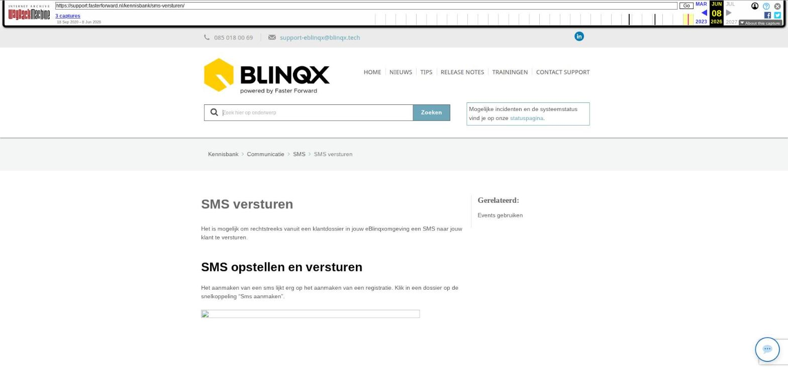

Aplaza offerteberichten verwerken

Tekstinhoud
Title: Aplaza offerteberichten verwerken | Support
URL: https://web.archive.org/web/20260215233737/https://support.fasterforward.nl/kennisbank/aplaza-offerte-berichten-verwerken/
Source element: <article>
---
Aplaza offerteberichten verwerken
Als je documenten en offertes van verzekeraars wilt ontvangen in eBlinqx, moet je werken met de Aplaza koppeling. Vanuit de Aplaza inbox verwerk je binnengekomen document- en offerteberichten.
In dit artikel lees je hoe je een offertebericht verwerkt of lees hier hoe je een correspondentiebericht verwerkt.
Door het verwerken van een offertebericht wordt er een product (en eventueel nieuw dossier) aangemaakt. Dit is middels een correspondentiebericht niet mogelijk.
Mogelijkheden verschillen per maatschappij
Binnengekomen berichten bekijken
Bericht toekennen
Bericht verwerken
Alleen beschikbaar voor schadeverzekeringen
Mutatievoorstellen
Matching van het Aplaza bericht
Matchen aan bestaand dossier of een nieuw dossier aanmaken
Nieuwe polis aangemaakt
Een bestaande polis aanpassen
Status product
Berichten verwijderen
Acceptant/behandelaar niet ingericht
Prolongatie & mutatie berichten
Mogelijkheden verschillen per maatschappij
Zoals aangegeven kan je in de Aplaza inbox correspondentieberichten en offerteberichten ontvangen. Het hangt van de maatschappij af welke berichten zij kunnen aanbieden. Sommige maatschappijen sturen alleen correspondentieberichten waar andere maatschappijen ook offerteberichten kunnen aanbieden. Via de website van Aplaza kan je per aangesloten aanbieder de mogelijkheden zien (transactie staat voor offerteberichten).
Door offerteberichten kunnen nieuwe pakketten/polissen aangemaakt worden, maar ook bestaande polissen kunnen geroyeerd worden.
Binnengekomen berichten bekijken
Klik op het dashboard op de Aplaza inbox om de ontvangen berichten van verzekeraars te bekijken.
Bovenaan filter je eenvoudig binnen de berichten. Daaronder vind je de berichten.
Wanneer een bericht automatisch gematcht is aan een dossier, herken je dit aan het huisje icoon (links in de regel). Door hier met je muis op te gaan staan, zie je het dossiernummer van het dossier waar het bericht aan is gekoppeld. In de kolom 'Klantnaam' zie je de klantnaam terug.
Het pagina icoon daarnaast geeft aan dat het bericht een document betreft.
Bericht toekennen
De berichten in de Aplaza inbox kan je toekennen aan jouzelf of aan een collega. Zo is het duidelijk wie het bericht gaat verwerken. Het toekennen doe je door te klikken op 'Toekennen'.
Vervolgens klik je op de naam van degene aan wie je het bericht wilt toekennen. De personen die in deze lijst getoond worden zijn de gebruikers die de rol 'Adviseur' hebben. Dit kan je controleren, als je de juiste rechten hebt, via Beheer – Organisatie & Personen – betreffende personen – rechts bij de gekoppelde organisatie.
Bericht verwerken
Via het wijzigicoon achteraan de regel kun je het bericht inzien en aanvullen. Vul alle velden aan waar een oranje driehoek met uitroepteken voor staat.
Na het aanvullen van de aangegeven velden, zie je voor alle velden groene vinkjes staan. Daarnaast komt er onderin een knop 'verwerk bericht' te staan. Wanneer je hier op klikt, wordt het bericht daadwerkelijk verwerkt. Via het dossiernummer in het bericht kan je rechtstreeks naar de polis in het dossier te gaan. Indien gewenst kun je nu de klant hiervan op de hoogte brengen of andere acties ondernemen voor verdere verwerking. Ook kan je vanuit het Aplaza bericht direct een taak aanmaken.
Alleen beschikbaar voor schadeverzekeringen
Berichten met het type Polis/Pakket worden alleen ondersteund voor schadeverzekeringen. Indien de branche een inkomensverzekering betreft (bijvoorbeeld 013) dan kan het bericht niet worden verwerkt en dus ook het product niet.
Mutatievoorstellen
Als je werkt met mutatievoorstellen dan wordt het Aplazabericht gematcht aan de hand van het polisnummer rechts in de productkaart. Hierdoor zie je in het Aplaza bericht per polis een blauwe melding wanneer er een mutatievoorstel voor deze polis open staat. Klik op deze melding om deze te bekijken. Ook worden eventuele conflicten per polis getoond. Wanneer je werkt met de setting maatschappijcontrolerend dan wordt ook de 'mutaties in behandelingtabel' getoond. Hier kunnen de zandlopers, indien gewenst, afgevinkt worden.
Matching van het Aplaza bericht
Afhankelijk van het wel of niet kunnen matchen, zijn er verschillende scenario's mogelijk.
Matchen aan bestaand dossier of een nieuw dossier aanmaken
Wanneer eBlinqx de desbetreffende personen kan matchen, wordt deze gematcht aan een bestaand dossier en wordt het dossiernummer weergegeven. Het matchen vindt plaats aan de hand van ingestelde settings. In de meeste gevallen wordt de match gemaakt aan de hand van de achternaam, geslacht en geboortedatum. Zodra hier een verschil in zit, bijvoorbeeld in eBlinqx staat ook de meisjesnaam en in het Aplaza bericht niet, dan staat er in het bericht bij 'Soort verwerking' 'Nieuw dossier' en wordt er bij het verwerken van het bericht een nieuw dossier aangemaakt.
Nieuwe polis aangemaakt
Zoals aangegeven wordt er, indien je niet werkt met mutatievoorstellen, een match gezocht aan de hand van het pakketnummer links in de productkaart. Wanneer je wel met mutatievoorstellen werkt dan wordt er een match gezocht op het polisnummer rechts in de productkaart. Wanneer er wel een match gevonden kan worden met een bestaand dossier, maar niet met het pakket/polisonderdeel dan wordt er een nieuwe polis aangemaakt. De soort verwerking in het Aplaza bericht is dan 'Nieuwe polis'. Let op: bij het matchen wordt er niet gekeken naar gearchiveerde producten. Op gearchiveerde producten zal geen match plaatsvinden.
Een bestaande polis aanpassen
Wanneer er wel een match gevonden kan worden op het dossier en op het product dan zal het offertebericht het bestaande product aanpassen, bijvoorbeeld door de polisonderdelen te royeren. De soort verwerking zal dan 'Nieuwe versie' zijn.
Status product
Wanneer je niet werkt met mutatievoorstellen dan zal de status van het gehele product niet veranderen door het verwerken van het Aplaza bericht. Deze zal je door middel van de workflow moeten aanpassen. Stel dat de maatschappij een offertebericht Royement verstuurd dan worden de polisonderdelen op geroyeerd gezet, maar de status van het product blijft Lopend of Wachtpolis.
Berichten verwijderen
Wanneer je één of meerdere Aplaza berichten hebt verwerkt in het klantdossier, is het verstandig om deze berichten te verwijderen. Zo behoud je het overzicht. Het verwijderen van het bericht kan via het rode kruisje of via de knop 'Verwijderen'. Deze knop en het rode kruisje is alleen zichtbaar als het bericht aan niemand is toegekend of voor de persoon aan wie de persoon is toegekend.
Het is ook mogelijk om meerdere berichten tegelijk te verwijderen. Hiervoor selecteer je in de Aplaza inbox meerdere berichten en klik je vervolgens onderaan de pagina op 'Verwijder geselecteerde berichten'. Berichten die je hebt verwerkt, kan je verwijderen.
Acceptant/behandelaar niet ingericht
Indien de acceptant/dossierverantwoordelijke niet is ingericht dan komt daar een oranje driehoek voor te staan. Je kunt deze inregelen via Advisor > support relatie. Hier lees je daar meer over.
Prolongatie & mutatie berichten
Prolongatie- en mutatie berichten verwerk je vanuit de ADN inbox. Hier lees je hoe je deze verwerkt.
Laatste update: 1 december 2025
Was deze informatie nuttig?
Ja Nee